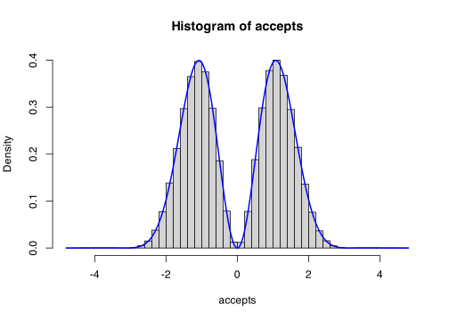
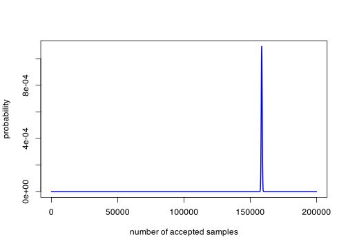
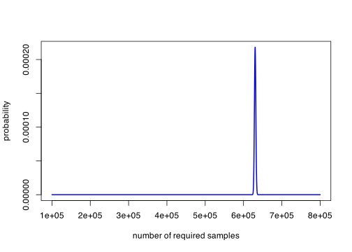
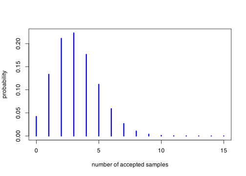

n_prop <- 1e6
props <- rnorm(n_prop)
accepts <- props[props >= 1]
length(accepts)[1] 158692MCest1 <- mean(accepts)
MCest1[1] 1.525705\[\newcommand{\Exg}{\operatorname{\mathbb{E}}} \newcommand{\Ex}{\mathbb{E}} \newcommand{\Ind}{\mathbb{I}} \newcommand{\Var}{\operatorname{Var}} \newcommand{\Cov}{\operatorname{Cov}} \newcommand{\Corr}{\operatorname{Corr}} \newcommand{\ee}{\mathrm{e}}\]
In the last two lectures, we have taken standard uniform \(U \sim \operatorname{U}[0,1]\) random variables, and have applied a function to them to transform into some other distribution \(X\). One \(U\) gets turned into one \(X\). (Or, for the Box–Muller transform, two \(U\)s become two \(X\)s.)
But so far, we have taken each sample we are given. But another way to get a different distribution is to throw out samples we don’t like and wait until we get a sample we do like. This is called rejection sampling.
Suppose we want not a \(\operatorname{U}[0,1]\) random variable but instead a \(\operatorname{U}[0,\tfrac12]\) random variable. One way we’ve already seen to do this is by the inverse transform method: simply multiply \(U\) by \(\tfrac12\). But we could also do this by rejection. We start with a proposed sample \(U \sim \operatorname{U}[0,1]\). If \(U \leq \tfrac12\), we “accept” the sample, and keep it. But if \(U > \tfrac12\), we “reject” the samples – we throw it away and ask for a new one. We keep proposing samples until we accept one that’s less than \(\tfrac12\). It should be easy to convince yourself that we get a \(\operatorname{U}[0,\tfrac12]\) random variable this way. (But we’ll prove it later, if not.)
The advantage of rejection sampling is that it can help us get samples from some distributions that we couldn’t access with the inverse transform method. The disadvantage is that it can be costly or slow, because we may have to reject lots of samples before finding enough that we can accept. The more often we reject samples, the slower the procedure will be.
Rejection sampling is particularly useful for sampling from a conditional distribution, such as the conditional distribution of \(Y\) given that \(Y \in A\): we simply accept a sample \(y\) if \(y \in A\) and reject it if not.
Example 14.1 Let \(Y \sim \operatorname{N}(0, 1)\). Suppose we wish to use Monte Carlo estimation to estimate \(\mathbb E(Y \mid Y \geq 1)\).
To do this, we will need samples from the conditional distribution \(Y \mid Y \geq 1\). So we accept proposed standard normal samples that are at least 1, and reject proposed samples that are less than 1.
There are two ways we could run this in practice. First, we could decide to take \(n\) proposal samples from \(Y\) and just see how many get accepted.
n_prop <- 1e6
props <- rnorm(n_prop)
accepts <- props[props >= 1]
length(accepts)[1] 158692MCest1 <- mean(accepts)
MCest1[1] 1.525705We end up accepting around 160,000 samples out of the 1,000,000 proposals we had to start with.
Second, we could keep proposing as many samples as needed until we reach some desired number of acceptances.
n_acc <- 1e5
samples <- rep(0, n_acc)
count <- 0
for (i in 1:n_acc) {
newsample <- 0
while (newsample < 1) {
newsample <- rnorm(1)
count <- count + 1
}
samples[i] <- newsample
}
count[1] 628133MCest2 <- mean(samples)
MCest2[1] 1.526865This required taking about 630,000 proposals to get 100,000 acceptances.
Here we used a “while” loop to keep taking samples until we go one that was not less than 1. The lines involving count were just so I could see how many proposals ended up being needed – these aren’t an integral part of the code.
So far, we have looked at always accepting or always rejecting a proposed sample, depending on its value. But we could “perhaps” accept some proposals too. Suppose we are already sampling from some distribution \(Y\) (perhaps generated via the inverse transform method, for example). If we see the proposed sample \(Y = x\), we could accept it with some acceptance probability \(\alpha(x) \in [0,1]\). We can control the accepted samples more delicately by adjusting this acceptance function \(\alpha\) to values that aren’t just 0 or 1.
What is the distribution of an accepted sample \(X\)?
Well, using Bayes’ theorem, we have in the discrete case \[\mathbb P(X = x) = \mathbb P(Y = x \mid \text{accept}) = \frac{\mathbb P(Y = x)\,\mathbb P(\text{accept} \mid Y = x)}{\mathbb P(\text{accept})} = \frac{1}{Z} \alpha(x)\,\mathbb P(Y = x) .\] where \(Z = \mathbb P(\text{accept})\) is the normalising constant. In the continuous case, with \(g\) the PDF of the original \(Y\) and \(f\) the PDF of the accepted \(X\), we have \[ f(x) = g(x \mid \text{accept}) = \frac{g(x)\,\mathbb P(\text{accept} \mid X = x)}{\mathbb P(\text{accept})} = \frac{1}{Z}\,\alpha(x)\,g(x) , \] where \(Z = \mathbb P(\text{accept})\) again.
Example 14.2 Suppose we wish to sample from the distribution \[ f(x) \propto \exp\big(-\tfrac12x^2\big)\,(\sin^2 x) . \tag{14.1}\] How can we do this?
Well, we can note that the PDF of the standard normal is \[ g(x) = \frac{1}{2\pi}\,\exp\big(-\tfrac12x^2\big) \propto \exp\big(-\tfrac12x^2\big) \] and that \[ 0 \leq \sin^2x\leq 1 .\] (Here, \(\sin^2 x\) means \((\sin x)^2\), by the way.) This means that, if we take proposals \(Y \sim \operatorname{N}(0,1)\), and then accept an proposed sample with probability \(\alpha(x) = \sin^2 x\), that will give us the distribution Equation 14.1.
n_prop <- 1e6
props <- rnorm(n_prop)
accepts <- props[runif(n_prop) <= sin(props)^2]
length(accepts)[1] 431663hist(accepts, probability = TRUE, breaks = 50)
curve(
0.92 * exp(-x^2 / 2) * sin(x)^2, add = TRUE, n = 1001,
lwd = 2, col = "blue"
)
By rejecting lots of proposals with values near 0, we turned the unimodal (“one hump”)proposal distribution \(Y \sim \operatorname{N}(0,1)\) into this interesting bimodal (“two hump”) distribution.
Let’s explain line 3 more carefully. We want to accept a proposal \(x\) with probability \(\sin^2 x\). We saw in Lecture 12 that we can simulate a Bernoulli\((p)\) distribution by taking the value 1 is \(U \leq p\) and taking 0 if \(U > p\). So in line 3, we are accepting each proposed sample \(x_i\) if a standard uniform variate \(u_i\) satisfies \(u_i \leq \sin^2 x_i\).
In this example, we found we accepted about 430,000 samples.
In this example, we managed to sample from the PDF in Equation 14.1, \[ f(x) = \frac{1}{Z}\,\exp\big(-\tfrac12x^2\big)\,(\sin^2 x) ,\] even though we never found out what the normalising constant \(Z\) was. This idea – that we can sample from a distribution even if we only know it up to a multiplicative constant – is a very important one that will come up a lot later in this module.
We won’t go into that idea deeply now, but we briefly mention that it is very important in Bayesian statistics. In Bayesian statistics, the posterior distribution is often known only up to proportionality. That’s because we have \[ \begin{align} \text{posterior} &\propto \text{prior}\times\text{likelihood} \\ \pi(\theta \mid x) &\propto\, \pi(x) \times p(x \mid \theta) \end{align} \] It’s often very difficult to find the normalising constant in this expression – indeed, it can be impossible in practice. So being able to sample from such a posterior distribution without finding the constant is very important for Bayesian statisticians.
We have mentioned that the downside of rejection sampling is that we may have to take lots of samples to get enough accepted ones. Or, conversely, we may not get enough accepted samples from a fixed number of “proposed” samples. Remember that the accuracy of Monte Carlo estimation, for example, depends on how many samples we get – the mean-square error scales like \(1/n\) and the root-mean-square error like \(1/\sqrt{n}\). So it’s important to be able to get a lot of samples \(n\).
Let’s examine these questions a bit closer. Write \(a = \mathbb P(\text{accept})\) for the probability a sample \(Y\) gets accepted (a priori, before we have seen the value \(Y = x\) of that sample). In the discrete case, this is \[ a = \mathbb P(\text{accept}) = \sum_x \mathbb P(Y = x)\,\alpha(x) , \] and in the discrete case this is \[ a = \mathbb P(\text{accept}) = \int_{-\infty}^{+\infty} g(x)\,\alpha(x)\,\mathrm{d}x . \] In both cases, this can be written more succinctly as \(a = \Exg\alpha(Y)\).
Let’s first look at the “fixed number of proposed samples” case.
If we take \(m\) proposed samples, each is accepted independently with probability \(a\). So the total number of accepted samples \(N\) follows a binomial distribution \(N \sim \operatorname{Bin}(m, a)\). This is because the binomial distribution describes the number of successes from \(m\) trials. This has expectation \(am\) and standard deviation \(\sqrt{a(1-a)m}\).
For large \(m\), the standard deviation will be very small compared to the expectation (unless \(a\) is very close to \(0\) or \(1\)), so the number of acceptances \(N\) will be very close to \(am\). If we need a more precise approximation, \(N\) can be approximated by a normal distribution \(N \approx \operatorname{N}(am, a(1-a)m)\). When \(a\) is very small, \(N\) can be better approximated by a Poisson distribution \(N \approx \operatorname{Po}(am)\).
The second way is the “keep taking proposed samples until we have accepted enough of them” way.
To get one acceptance requires a geometric \(\operatorname{Geom}(a)\) number of samples. This is because the geometric distribution counts the number of trials needed until the first success. To get \(n\) accepted samples will require the sum of \(n\) independent \(\operatorname{Geom}(a)\) distributions – this is sometimes called the negative binomial distribution \(M \sim \operatorname{NegBin}(n, a)\), which is the number of trials needed until the \(n\)th success. This has expectation \(n/a\) and standard deviation \(\sqrt{(1-a)n}/a\).
For large \(n\), the standard deviation will be very small compared to the expectation (unless \(a\) is very close to \(0\) or \(1\)), so the number of proposal \(M\) will be very close to \(n/a\). If we need a more precise approximation, \(M\) can be approximated by a normal distribution \(M \approx \operatorname{N}(n/a, (1-a)n/a^2)\). When \(a\) is very small, \(N\) can be better approximated by a Gamma distribution \(M \approx \Gamma(n, a)\).
Example 14.3 In Example 14.1, we accepted \(Y \sim \operatorname{N}(0,1)\) if \(Y \geq 1\). In this case, we happen to know the acceptance probability exactly: it’s\(\mathbb P(Y \geq 1) = 0.158\).
From 1,000,000 proposals, the number of accepted samples we might get is shown below.
n_prop <- 1e6
acc_prob <- pnorm(1, lower.tail = FALSE)
plot(
0:2e5, dbinom(0:2e5, n_prop, acc_prob),
type = "l", col = "blue", lwd = 2,
xlab = "number of accepted samples", ylab = "probability"
)
We see that the number of acceptance will be very close to \(an = 0.158\times 1\,000\,000 = 158\,000\).
The number of proposals required for 100,000 acceptances is shown below.
n_acc <- 1e5
acc_prob <- pnorm(1, lower.tail = FALSE)
plot(
n_acc + 0:7e5, dnbinom(0:7e5, n_acc, acc_prob),
type = "l", col = "blue", lwd = 2,
xlab = "number of required proposals", ylab = "probability"
)
The number of required proposals will be very close to \(n/a = 100\,000 / 0.158 = 630\,000\).
Example 14.4 Suppose instead we were trying to sample from a standard normal conditional on \(Y > 4\). Again, we take a standard normal proposal and accept if the proposal is greater than 4. This is a different matter, because the acceptance probability is very small: about \(0.00003\).
Here, the number of acceptances from 100,000 proposals is
n_prop <- 1e5
acc_prob <- pnorm(4, lower.tail = FALSE)
plot(
0:15, dbinom(0:15, n_prop, acc_prob),
type = "h", col = "blue", lwd = 3,
xlab = "number of accepted samples", ylab = "probability"
)
There is likely to be a very small number of acceptances – and around a 4% chance there are no acceptances at all. The distribution of the number of acceptances is roughly Poisson.
The number of proposals required for just 5 acceptances, on the other hand, is:
n_acc <- 5
acc_prob <- pnorm(4, lower.tail = FALSE)
plot(
n_acc + 0:6e5, dnbinom(0:6e5, n_acc, acc_prob),
type = "l", col = "blue", lwd = 2,
xlab = "number of required proposals", ylab = "probability"
)
This has a very wide spread of how many proposals will be required – anything between about 50,000 and 300,000 is reasonably plausible.
This shows the danger of running rejection sampling when the probability of acceptance is very small. Not only is the procedure slow and wasteful, but it’s also very unpredictable.
(Annoyingly, R defines the geometric distribution to be the number of failures before the first success – 1 less then our definition – and the negative binomial to be the number of failures before the \(n\)th success – \(n\) less than our definition. This is why n_acc + dnbinom() was plotted for the two second graphs.)
Next time. We look closer at rejection sampling, and in particular how we can target rejection sampling at a given distribution using the “envelope” method.
Summary:
In rejection sampling, we accept a proposed sample \(Y = x\) with probability \(\alpha(x)\).
If the PDF of a proposed sample is \(g\), then the PDF of an accepted sample is proportional to \(\alpha(x) \,g(x)\).
When the acceptance probability is low, rejection sampling can require a lot of proposed samples to get enough accepted samples.
Read more: Voss, An Introduction to Statistical Computing, Subsections 1.4.1 and 1.4.3.